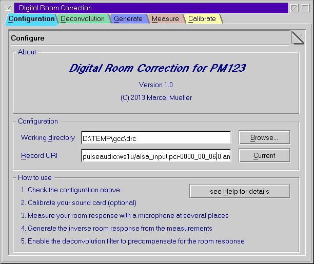
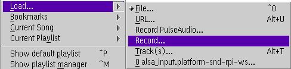

DRC123 is designed to store all related user files in a single working directory. If you have different rooms or speakers then it is recommended to use different directories.
This is the PM123 URI that connects to your microphone. The most common one is record:///0?samp=48000&stereo&in=line&share=yes. It records from the standard sound device taking the line in connector at 48 kHz sampling rate.
If you microphone is plugged in somewhere else you need to adjust this. The easiest way is to use the record assistant in the context menu of PM123. Once you selected the right input press the current button in DRC123's configuration dialog. But be careful to do this at low volume because a feedback loop could be very unpleasant and destroy you tweeters.